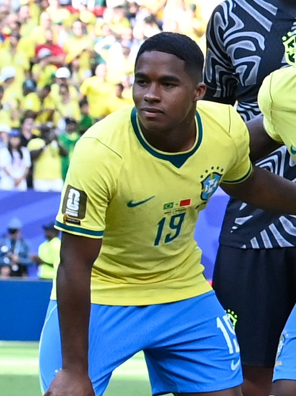

维尼修斯12分钟上演帽子戏法 巴西7比0大胜新加坡
维尼修斯·儒尼奥尔在第9、15和21分钟连进三球，完成个人国家队首个帽子戏法，恩德里克、埃斯特旺和拉扬也在国家体育场取得进球。

比赛经过
2026年11月17日星期二，巴西队在新加坡国家体育场举行的友谊赛中以7比0击败新加坡队。据ESPN报道，维尼修斯·儒尼奥尔在开场21分钟内连进三球。
第9分钟，维尼修斯接布鲁诺·吉马良斯的传球首开纪录。据Football Today报道，第15分钟他与恩德里克配合后再进一球；第21分钟，他完成由吉马良斯发起、埃斯特旺串联的进攻，上演帽子戏法。这是他为巴西国家队打进的首个帽子戏法。

第31分钟，恩德里克将比分扩大为4比0。下半场，埃斯特旺在第51分钟、拉扬在第65分钟先后破门，第74分钟，新加坡后卫拉乌尔·苏海米又打进一粒乌龙球。维尼修斯在第60分钟后被换下。
数据
根据ESPN的技术统计，巴西队控球率为60%，射正11次，新加坡队仅射正1次。新加坡队完成5次扑救。
比赛意义
这是两国之间的第二次交锋，巴西队在2008年的首次交手中获胜。由卡洛·安切洛蒂执教的巴西队三天前以2比3负于日本队，日本队的制胜球由坂元达裕在补时阶段打进。维尼修斯在那场比赛中梅开二度。拉菲尼亚因在对阵日本队时被罚下，缺席了本场比赛。
由加文·李执教的新加坡队在11月13日以1比4负于巴拉圭队，本期国际比赛日两战南美球队均告失利。